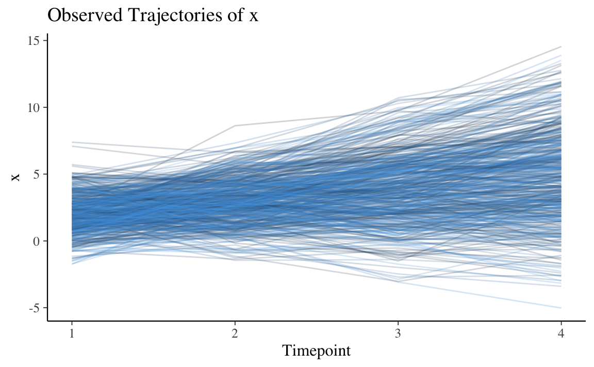

21.2 Crescita non lineare
Ripetiamo la procedura di analisi descritta sopra introducendo però un cambiamento: verrà considerato un modello nel quale la crescita non è lineare.
Nelle analisi seguenti useremo i seguenti indici di bontà di adattamento.
selected_fit_stats <-
c(
"chisq.scaled",
"df.scaled", ## must be >0 to test G.O.F.
"pvalue.scaled", ## ideally n.s.
"cfi.scaled", ## ideally ≥ 0.95
"rmsea.scaled", ## ideally ≤ 0.05
"rmsea.pvalue.scaled", ## ideally n.s.
"srmr" ## ideally < 0.08
)Simulo i dati secondo questo modello.
growth_mod <-
"
## intercept & slope growth terms for X
iX =~ 1*x1 + 1*x2 + 1*x3 + 1*x4
sX =~ 0*x1 + 1*x2 + 2*x3 + 3*x4
## intercept, slope, & quadratic terms for Y
iY =~ 1*y1 + 1*y2 + 1*y3 + 1*y4
sY =~ 0*y1 + 1*y2 + 2*y3 + 3*y4
qY =~ 0*y1 + 1*y2 + 4*y3 + 9*y4
## set variances
y4 ~~ 2*y4
x4 ~~ 1*x4
## set latent means/intercepts
iX ~ 2*1
sX ~ 1*1
sY ~ -1*1
qY ~ -1.5*1
sY ~ 2*predictor
outcome ~ 2*iX + 3*sY
"A questo fine uso la funzione simulateData() di lavaan. La simulazione include due variabili misurate in quattro punti temporali.
sim_growth_dat <- simulateData(
model = growth_mod,
model.type = "growth",
seed = 82020,
orthogonal = F,
auto.cov.y = T,
auto.var = T
)Le variabili sono chiamate x1, x2, x3, x4, per la misurazione di x ai tempi 1, 2, 3, 4. Lo stesso per la y.
head(sim_growth_dat)
#> x1 x2 x3 x4 y1 y2 y3
#> 1 1.033229 2.746064 4.9423623 8.41058044 3.36324415 -1.196550 -11.103494
#> 2 3.192802 3.057675 0.7965786 0.84592869 -1.60039704 -5.970381 -10.399366
#> 3 3.758457 4.712351 5.6308218 4.76577291 2.58001675 -3.272134 -11.312994
#> 4 2.700514 4.921257 6.7116263 10.13354061 0.03886676 0.510869 -5.937016
#> 5 1.259807 1.526301 1.6663799 -0.09959486 0.53939838 -4.274106 -12.968362
#> 6 2.547125 5.426192 4.9463195 8.48790397 2.18069542 1.590009 -2.253218
#> y4 outcome predictor
#> 1 -31.509255 2.161186 -0.4893276
#> 2 -19.908088 5.089750 0.5199749
#> 3 -26.681111 3.173129 -0.5938816
#> 4 -7.836099 1.035215 -0.7813707
#> 5 -22.595311 -4.352557 -0.7067630
#> 6 -8.892786 3.277985 -1.2978592Aggiungo qui il numero del partecipante.
sim_growth_dat$participant_n <-
1:nrow(sim_growth_dat) # add participant numberNei dati simulati, la variabile x cambia linearmente nel tempo e la variabile y cambia seguendo un andamento quadratico. Esaminiamo i dati graficamente.
x_plot <-
pivot_longer(sim_growth_dat,
cols = x1:x4,
names_to = "x",
names_prefix = "x"
)
individual_x_trajectories <-
ggplot(
x_plot,
aes(
x = as.numeric(x),
y = value,
group = participant_n,
color = participant_n
)
) +
geom_line(alpha = 0.2) +
labs(
title = "Observed Trajectories of x",
x = "Timepoint",
y = "x"
) +
xlim(1, 4) +
theme(legend.position = "none")
individual_x_trajectories
Su può vedere che la variabile x segue una crescita lineare, ma un modello quadratico molto “debole” potrebbe adattarsi meglio ai dati, quindi sarà necessario controllare se in effetti questo è vero. Se entrambi i modelli si adattano bene, li confronteremo con il test del rapporto di verosimiglianza (LRT).
Faccio lo stesso per la variabile y.
y_plot <-
pivot_longer(sim_growth_dat,
cols = y1:y4,
names_to = "y",
names_prefix = "y"
)
individual_y_trajectories <-
ggplot(
y_plot,
aes(
x = as.numeric(y),
y = value,
group = participant_n,
color = participant_n
)
) +
geom_line(alpha = 0.2) +
labs(
title = "Observed trajectories of y",
x = "Timepoint",
y = "y"
) +
xlim(1, 4) +
theme(legend.position = "none")
individual_y_trajectories
È chiaro che la y diminuisce in media con il tempo, ma c’è eterogeneità (o variabilità) in ciò che accade nei singoli caso. Anche in questo caso, sia un modello lineare sia un modello quadratico sembrano appropriati per descrivere il cambiamento nei dati.
21.2.1 Stimatore
Tutti i dati utilizzati sono continui, quindi useremo la stima della massima verosimiglianza (stimatore = ML). Tuttavia è preferibile usare la variante “robusta” (stimatore = MLR) quando possibile per tenere conto dei possibili non normalità nei dati.
21.2.2 Assenza di crescita
Iniziamo con un modello per la x che assume che non vi sia variazione in funzione del tempo.
int_x_mod <-
"
iX =~ 1*x1 + 1*x2 + 1*x3 + 1*x4
"Eseguiamo il fit e esaminiamo i risultati.
int_x_fit <-
growth(
model = int_x_mod,
estimator = "MLR",
data = sim_growth_dat
)
int_x_fit_stats <-
fitmeasures(
int_x_fit,
selected_fit_stats
) %>%
data.frame()
round(int_x_fit_stats, 2)
#> .
#> chisq.scaled 1192.66
#> df.scaled 8.00
#> pvalue.scaled 0.00
#> cfi.scaled 0.02
#> rmsea.scaled 0.54
#> rmsea.pvalue.scaled 0.00
#> srmr 0.63È chiaro che il modello di assenza di crescita non spiega i dati x. Consideriamo y.
int_y_mod <-
"
iY =~ 1*y1 + 1*y2 + 1*y3 + 1*y4
"
int_y_fit <-
growth(
model = int_y_mod,
estimator = "MLR",
data = sim_growth_dat
)
int_y_fit_stats <-
fitmeasures(
int_y_fit,
selected_fit_stats
) %>%
data.frame()
round(int_y_fit_stats, 2)
#> .
#> chisq.scaled 3136.54
#> df.scaled 8.00
#> pvalue.scaled 0.00
#> cfi.scaled 0.00
#> rmsea.scaled 0.88
#> rmsea.pvalue.scaled 0.00
#> srmr 0.98Il modello di assenza di crescita non è adeguato neppure per la variabile y.
21.2.3 Crescita lineare
Esaminiamo un modello di crescita lineare per la x.
linear_x_mod <-
"
iX =~ 1*x1 + 1*x2 + 1*x3 + 1*x4
sX =~ 0*x1 + 1*x2 + 2*x3 + 3*x4
"
linear_x_fit <-
growth(
model = linear_x_mod,
estimator = "MLR",
data = sim_growth_dat
)
linear_x_fit_stats <-
fitmeasures(
linear_x_fit,
selected_fit_stats
) %>%
data.frame()
round(linear_x_fit_stats, 2)
#> .
#> chisq.scaled 4.03
#> df.scaled 5.00
#> pvalue.scaled 0.54
#> cfi.scaled 1.00
#> rmsea.scaled 0.00
#> rmsea.pvalue.scaled 0.92
#> srmr 0.02Il modello di crescita lineare per la x si adatta bene rispetto a tutti gli indici. Questo è ciò che ci aspettavamo in base al grafico dei dati osservati.
Esaminiamo un modello di crescita lineare per la y.
linear_y_mod <-
"
iY =~ 1*y1 + 1*y2 + 1*y3 + 1*y4
sY =~ 0*y1 + 1*y2 + 2*y3 + 3*y4
"
linear_y_fit <-
growth(
model = linear_y_mod,
estimator = "MLR",
data = sim_growth_dat
)
linear_y_fit_stats <-
fitmeasures(
linear_y_fit,
selected_fit_stats
) %>%
data.frame()
round(linear_y_fit_stats, 2)
#> .
#> chisq.scaled 842.85
#> df.scaled 5.00
#> pvalue.scaled 0.00
#> cfi.scaled 0.61
#> rmsea.scaled 0.58
#> rmsea.pvalue.scaled 0.00
#> srmr 0.55Il modello lineare è inadeguato per la y rispetto a tutti gli indici considerati.
21.2.4 Crescita quadratica
I termini quadratici rappresentano il tasso medio di variazione della pendenza nelle diverse rilevazioni temporali. Per descrivere una tale caratteristica si parla di “crescita quadratica” nei modelli SEM.
Consideriamo un modello di crescita quadratica per la x.
quad_x_mod <-
"
iX =~ 1*x1 + 1*x2 + 1*x3 + 1*x4
sX =~ 0*x1 + 1*x2 + 2*x3 + 3*x4
qX =~ 0*x1 + 1*x2 + 4*x3 + 9*x4
"
quad_x_fit <-
growth(
model = quad_x_mod,
estimator = "MLR",
data = sim_growth_dat
)
quad_x_fit_stats <-
fitmeasures(
quad_x_fit,
selected_fit_stats
)
round(quad_x_fit_stats, 2)
#> chisq.scaled df.scaled pvalue.scaled cfi.scaled
#> 0.02 1.00 0.89 1.00
#> rmsea.scaled rmsea.pvalue.scaled srmr
#> 0.00 0.94 0.00Qui abbiamo un problema interessante, poiché la x si adatta abbastanza bene sia a un modello lineare che a uno quadratico, ma abbiamo un caso di Heywood, in particolare la varianza della variabile osservata stimata è negativa.
lavInspect(quad_x_fit, "est")$theta
#> x1 x2 x3 x4
#> x1 1.171
#> x2 0.000 0.718
#> x3 0.000 0.000 1.213
#> x4 0.000 0.000 0.000 -0.064Si ottiene una stima negativa per la varianza della variabile osservata x4. Questo è un problema e indica che il modello potrebbe non rappresentare bene i dati. È possibile introdurre dei vincoli nei parametri per vedere se l’adattamento rimane buono se “forziamo” una modifica a questo parametro, ma questo va oltre gli scopi presenti. Per i fini di questo tutorial ignoreremo questo caso di Heywood e proseguiremo nell’analisi.
Quando si hanno due modelli nidificati adatti (nel nostro caso, modelli lineari e quadratici), possiamo confrontare formalmente l’adattamento con i test del rapporto di verosimiglianza (LRT). L’ipotesi nulla è che non vi sia alcuna differenza nella varianza spiegata dai due modelli. La parsimonia è preferita in una situazione in cui la varianza spiegata è equivalente.
lavTestLRT(linear_x_fit, quad_x_fit)
#> Scaled Chi-Squared Difference Test (method = "satorra.bentler.2001")
#>
#> lavaan NOTE:
#> The "Chisq" column contains standard test statistics, not the
#> robust test that should be reported per model. A robust difference
#> test is a function of two standard (not robust) statistics.
#>
#> Df AIC BIC Chisq Chisq diff Df diff Pr(>Chisq)
#> quad_x_fit 1 7570.4 7625.2 0.0200
#> linear_x_fit 5 7566.4 7604.3 4.0675 4.0026 4 0.4056Qui, un p-value \(> 0.05\) ci dice che il modello lineare è da preferire.
Esaminiamo la y.
quad_y_mod <-
"
iY =~ 1*y1 + 1*y2 + 1*y3 + 1*y4
sY =~ 0*y1 + 1*y2 + 2*y3 + 3*y4
qY =~ 0*y1 + 1*y2 + 4*y3 + 9*y4
"
quad_y_fit <-
growth(
model = quad_y_mod,
estimator = "MLR",
data = sim_growth_dat
)
quad_y_fit_stats <-
fitmeasures(
quad_y_fit,
selected_fit_stats
)
quad_y_fit_stats
#> chisq.scaled df.scaled pvalue.scaled cfi.scaled
#> 0.190 1.000 0.663 1.000
#> rmsea.scaled rmsea.pvalue.scaled srmr
#> 0.000 0.813 0.001Qui il modello quadratico si adatta molto bene ai dati ed è sicuramente da preferire al modello lineare per la y.
lavTestLRT(linear_y_fit, quad_y_fit)
#> Scaled Chi-Squared Difference Test (method = "satorra.bentler.2001")
#>
#> lavaan NOTE:
#> The "Chisq" column contains standard test statistics, not the
#> robust test that should be reported per model. A robust difference
#> test is a function of two standard (not robust) statistics.
#>
#> Df AIC BIC Chisq Chisq diff Df diff Pr(>Chisq)
#> quad_y_fit 1 9301.7 9356.5 0.1901
#> linear_y_fit 5 10194.9 10232.9 901.4270 829.59 4 < 2.2e-16 ***
#> ---
#> Signif. codes: 0 '***' 0.001 '**' 0.01 '*' 0.05 '.' 0.1 ' ' 1